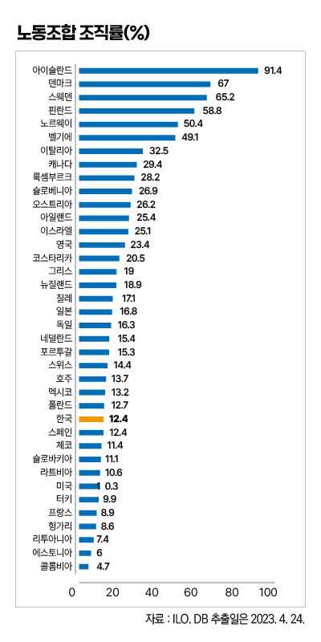
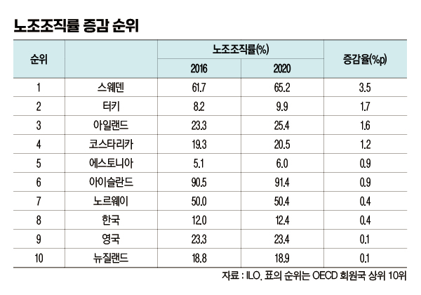
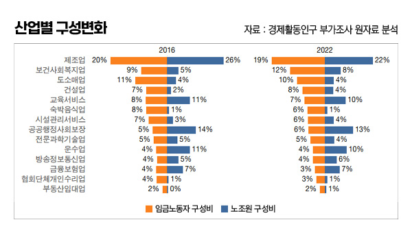
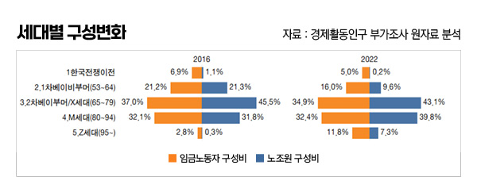

박영삼의 통계로 보는 노동
젊은 세대·여성 조합원 늘어난 한국 노조
고용노동부가 지난해 말 발표한 우리나라의 노조 조직률은 2021년 말 기준으로 14.2%를 기록했다. 노조에 가입할 수 있는 임금노동자 2천58만6천명 중 293만3천명이 노조에 가입한 수치다. 이와 별도로 통계청의 경제활동인구 부가조사에서 집계되는 노조가입률은 2022년 8월 기준으로 12.4%다. 2천172만4천명 중 269만2천명이 가입한 것으로 나타난다.
두 통계가 보여주는 것은 문재인 정부가 출범했던 2017년 이후 노조조직률의 뚜렷한 상승 흐름이다. 노동부 기준으로는 2016년 10.3%였던 노조조직률이 2017년에는 10.7%로 상승했고 2021년에는 14.2%로 뛰어올라 5년간 3.9%포인트 증가했다. 통계청 경활부가조사 수치로는 12.0%에서 12.4%로 6년 만에 0.4%포인트가 상승한 것으로 나온다.
5년간 노조조직률 증가, 국제적으로 흔치 않은 사례

2016년 이후 노조조직률이 증가한 나라는 손에 꼽을 정도이다. 국제노동기구(ILO) 138개 회원국 중 2016년 이후 노조조직률이 증가한 나라는 25개국에 불과하다. 경제협력개발기구(OECD) 회원국으로 폭을 좁히면 38개 회원국 중 스웨덴·아일랜드·아이슬란드·노르웨이 등 노조가 강한 나라들을 중심으로 10개국만 노조조직률 증가 흐름을 보였다. 여기에 한국이 포함된 것이다.
물론 우리나라의 절대적인 노조조직률 수준은 여전히 낮은 편이다. OECD 회원국 중 27위다. ILO 회원국 전체로 따지면 89위에 머문다. 그러므로 최근 노조조직률 증가가 우연한 증가가 아니라 추세적이고 의미 있는 것인지는 한번 살펴볼 필요가 있다.
노동부 통계치인 조직률 14.2%는 민주노총이 출범하기 직전이었던 1994년의 14.5% 이후 역대 최고 조직률이다. 통계청 기준으로는 2008년 금융위기 발발 직전의 12.8%에 이어 두 번째로 높은 수치다. 그렇다면 2017년을 전후로 노조조직률의 실질적인 변화 흐름이 나타난 것인지, 경제활동인구 부가조사 원자료를 통해 임금노동자 구성 변화와 노조원 구성 변화를 함께 살펴보기로 한다.
대신 이 글에서는 산업별 조합원수 증감이나 연령구간별 조합원수 증감을 비교하는 방식이 아니라 전체 노동자의 구성변화와 노조원의 구성변화를 함께 살펴보는 방식을 사용하기로 한다. 그렇게 하면 각각 숫자의 증감만 비교할 때보다 전체 임금노동자와 노조원의 변화 양상을 비교해 볼 수 있다. 쉽게 말해서 노조가 전체 노동자와 ’얼마나 잘 닮아 있는지’를 살펴보는 것이다. 기간은 2016~2022년이다.

노조는 전체 노동자를 얼마나 닮았나
우리나라 임금노동자의 산업별 고용 비중을 보면 제조업이 1위(20%)이고, 도소매업(11%), 교육서비스업(8%), 숙박음식업(8%) 순서로 이어진다. 노조원의 구성 비중에서 1위는 제조업(23%)으로 동일하나 그 다음 비중은 공공사회보장(14%), 교육서비스(11%), 운수업(11%) 순으로 차이가 난다. 2016~2022년 제조업과 도소매업의 고용 비중은 1%포인트 줄고 보건복지업의 비중이 3%포인트 늘었다. 건설업과 공공사회보장행정의 비중이 각각 1%포인트 늘어났다. 그런데 노조원의 제조업 비중은 감소했지만 공공행정과 운수업에서는 임금노동자 비중 변화를 그대로 따라가지 않았다. 대신 보건복지업과 건설업, 정보통신업, 시설관리업이 임금노동자 비중 변화에 민감하게 반응했다. 특히 보건복지업과 정보통신업은 노조원 비중이 증가하면서 비중 순위까지 상위로 밀고 올라간 것이 눈에 띈다.

노조도 고령화? 세대교체 생각보다 빨라
’세대’를 기준으로 노동자와 조합원의 인적 구성 변화를 살펴보면 흥미로운 사실을 확인할 수 있다. 임금노동자 전체로 보면 베이비붐세대의 비중이 줄어들고 80년대 이후 출생한 이른바 MZ세대 비중이 2016년 35%에서 2022년 43%로 높아지는 특징을 보인다. 그런데 노조원의 세대별 비중은 이보다 더 큰 변화를 보여 MZ세대의 비중이 같은 기간 32%에서 47%로 절반에 가까운 비중을 차지하게 됐을 뿐만 아니라, 1% 미만 수준이던 95년 이후 출생 Z세대의 비중도 7%를 넘어서게 됐다. 인구고령화가 빠르게 진행되고 있는 가운데 은퇴세대는 노조에서 완전히 빠져나가는 대신 상대적으로 젊은 세대가 노조로 유입되면서 조합원 세대교체가 진행되고 있는 것이다. 연령효과가 있기 하지만 2016~2022년 6년간 임금노동자의 평균 연령은 만 44.7세에서 47.4세로 2.7세 늘었으나 노조원의 평균연령은 43.1세에서 44.4세로 1.3세 늘었을 뿐이다.

이와 함께 임금노동자 전체로 보면 30명 미만 고용 비중이 59%에서 56%로 줄어들고 300명 이상 고용 비중이 12%에서 14%로 늘었다. 노조원의 30명 미만 사업장 비중은 1%포인트 줄어든 대신 300명 이상 조합원 비중은 35%에서 39%로 더 크게 증가한 것으로 나타났다. 전문 관련 직종은 고용 비중으로는 1%포인트 증가했을 뿐이지만 노조원 비중은 3%포인트 늘어났다. 서비스직 비중도 노동자 전체로는 1%포인트 비중이 늘어났지만 조합원 비중은 3%포인트나 늘어났다. 이와 함께 임금노동자 가운데 대졸이상 비중은 35%에서 39%로 늘면서 노조원의 대졸이상 비중은 48%에서 51%로 늘어났다. 고용형태면에서 기간제 비정규직 비중이 10%에서 14%로 늘었는데 기간제 노조원 비중은 4%에서 7%로 늘어났다. 노동자 가운데 여성 비중이 44%에서 45%로 1%포인트 늘어날 때 노조원 중 여성 비중은 31%에서 35%로 4%포인트 늘어난 것도 눈에 띈다.
2016~2022년 기간 동안 노조의 구성에도 많은 변화가 일어났다. 어떤 것은 임금노동자 전체의 구성 변화를 그대로 반영한 것도 있지만 어떤 것은 더 큰 변화가 일어난 영역도 있다. 보건복지업과 정보통신업의 성장에 대해 노조는 빠르게 반응했고 대기업의 고용비중 증가도 노조원의 구성에 그대로 반영됐다. 이제 노조원 가운데 대졸 이상 비율이 절반을 넘게 되었다. 세대 변화는 생각보다 큰 변화를 노조에 가져올 것으로 예상되며 여성노조원의 비중 증가도 중요한 의미를 갖는다.
풀은 바람보다 빨리 눕지만 바람보다 빨리 일어선다고 했다. 노조는 변화에 적응해야 하기도 하지만, 변화의 방향을 읽고 대응하는 주체이기도 하다. 지난 5년간의 변화를 제대로 짚어보면서 앞으로 다가오는 바람에 어떻게 맞설 것인지 노조의 대응이 주목된다.
고려대 노동문제연구소 노동데이터센터장 (youngsampk@gmail.com)